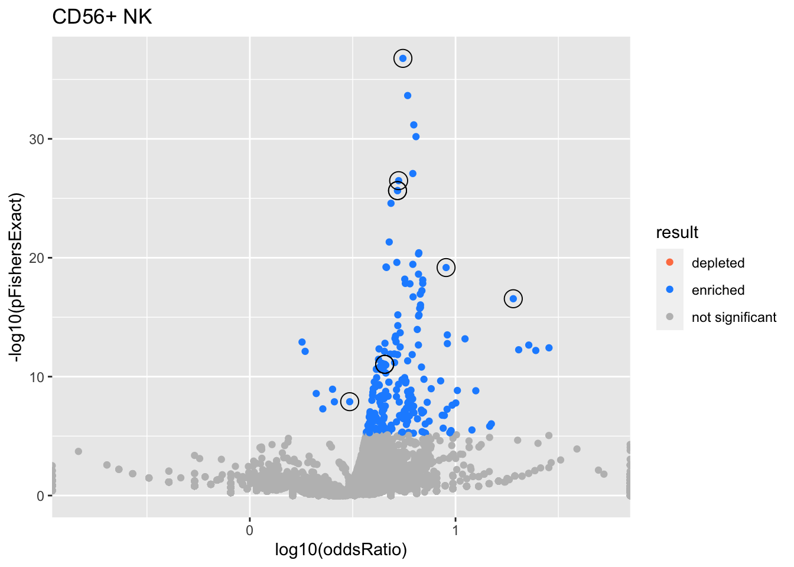
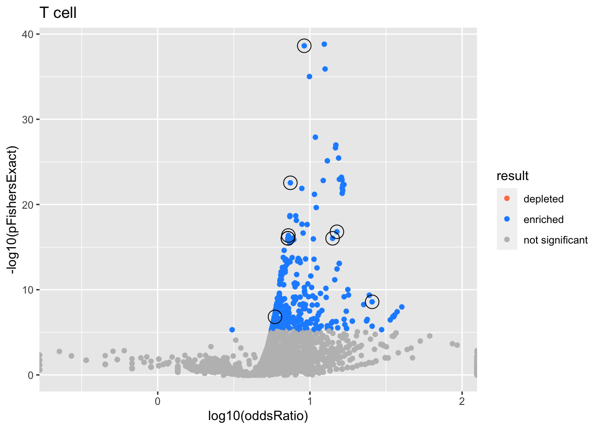
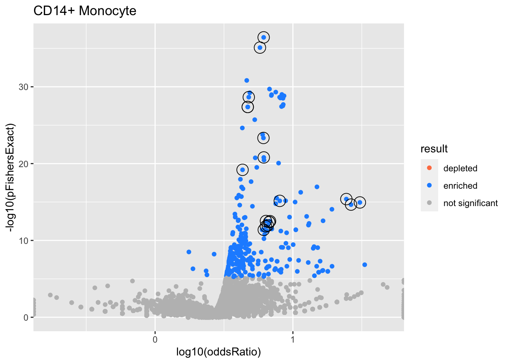
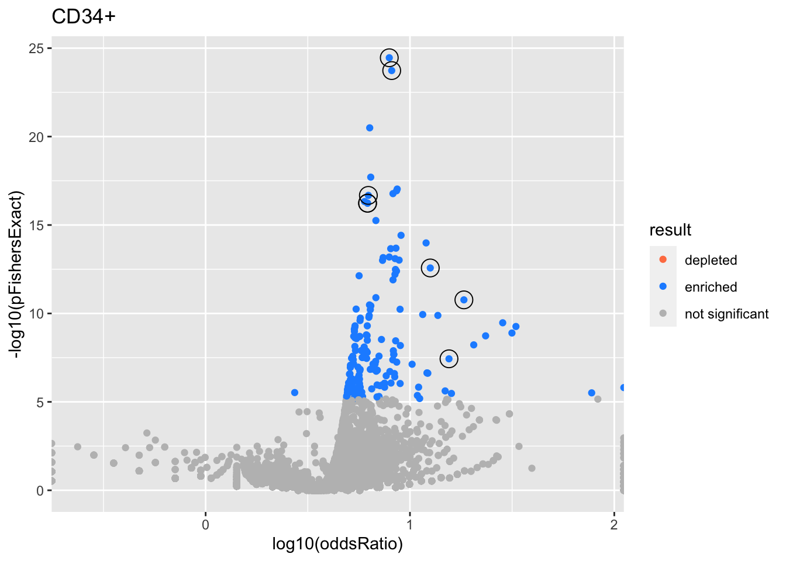

Last updated: 2022-04-18
Checks: 7 0
Knit directory: logistic-susie-gsea/
This reproducible R Markdown analysis was created with workflowr (version 1.7.0). The Checks tab describes the reproducibility checks that were applied when the results were created. The Past versions tab lists the development history.
Great! Since the R Markdown file has been committed to the Git repository, you know the exact version of the code that produced these results.
Great job! The global environment was empty. Objects defined in the global environment can affect the analysis in your R Markdown file in unknown ways. For reproduciblity it’s best to always run the code in an empty environment.
The command set.seed(20220105) was run prior to running the code in the R Markdown file. Setting a seed ensures that any results that rely on randomness, e.g. subsampling or permutations, are reproducible.
Great job! Recording the operating system, R version, and package versions is critical for reproducibility.
Nice! There were no cached chunks for this analysis, so you can be confident that you successfully produced the results during this run.
Great job! Using relative paths to the files within your workflowr project makes it easier to run your code on other machines.
Great! You are using Git for version control. Tracking code development and connecting the code version to the results is critical for reproducibility.
The results in this page were generated with repository version b17793e. See the Past versions tab to see a history of the changes made to the R Markdown and HTML files.
Note that you need to be careful to ensure that all relevant files for the analysis have been committed to Git prior to generating the results (you can use wflow_publish or wflow_git_commit). workflowr only checks the R Markdown file, but you know if there are other scripts or data files that it depends on. Below is the status of the Git repository when the results were generated:
Ignored files:
Ignored: .DS_Store
Ignored: .RData
Ignored: .Rhistory
Ignored: .Rproj.user/
Ignored: library/
Ignored: renv/library/
Ignored: renv/staging/
Ignored: staging/
Untracked files:
Untracked: .ipynb_checkpoints/
Untracked: Untitled.ipynb
Untracked: _targets.R
Untracked: _targets.html
Untracked: _targets.md
Untracked: _targets/
Untracked: _targets_r/
Untracked: analysis/alpha_ash_v_point_normal.Rmd
Untracked: analysis/de_droplet_noshrink.Rmd
Untracked: analysis/de_droplet_noshrink_logistic_susie.Rmd
Untracked: analysis/fetal_reference_cellid_gsea.Rmd
Untracked: analysis/fixed_intercept.Rmd
Untracked: analysis/iDEA_examples.Rmd
Untracked: analysis/latent_gene_list.Rmd
Untracked: analysis/linear_method_failure_modes.Rmd
Untracked: analysis/linear_regression_failure_regime.Rmd
Untracked: analysis/logistic_susie_v_tccm_ebnm_susie.Rmd
Untracked: analysis/logistic_susie_veb_boost_vs_vb.Rmd
Untracked: analysis/logistic_susie_vis.Rmd
Untracked: analysis/references.bib
Untracked: analysis/scale_v_standardize_v_raw.Rmd
Untracked: analysis/simulations.Rmd
Untracked: analysis/test.Rmd
Untracked: build_site.R
Untracked: cache/
Untracked: code/html_tables.R
Untracked: code/latent_logistic_susie.R
Untracked: code/load_data.R
Untracked: code/logistic_susie_data_driver.R
Untracked: code/marginal_sumstat_gsea_collapsed.R
Untracked: code/point_normal.R
Untracked: code/sumstat_gsea.py
Untracked: code/susie_gsea_queries.R
Untracked: data/adipose_2yr_topsnp.txt
Untracked: data/de-droplet/
Untracked: data/deng/
Untracked: data/fetal_reference_cellid_gene_sets.RData
Untracked: data/human_chimp_eb/
Untracked: data/pbmc-purified/
Untracked: data/wenhe_baboon_diet/
Untracked: docs.zip
Untracked: export/
Untracked: index.md
Untracked: simulation_targets/
Unstaged changes:
Modified: _simulation_targets.R
Modified: _targets.Rmd
Modified: analysis/alpha_for_single_cell.Rmd
Modified: analysis/baboon_diet.Rmd
Modified: analysis/gseabenchmark_tcga.Rmd
Modified: analysis/human_chimp_eb_de_example.Rmd
Modified: analysis/single_cell_pbmc.Rmd
Modified: analysis/single_cell_pbmc_l1.Rmd
Deleted: analysis/summary_stat_gsea_univariate_simulations.Rmd
Modified: code/enrichment_pipeline.R
Modified: code/fit_baselines.R
Modified: code/fit_logistic_susie.R
Modified: code/fit_mr_ash.R
Modified: code/fit_susie.R
Modified: code/load_gene_sets.R
Modified: code/logistic_susie_vb.R
Modified: code/marginal_sumstat_gsea.R
Modified: code/simulate_gene_lists.R
Modified: code/tccm_ebnm.R
Modified: target_components/factories.R
Modified: target_components/methods.R
Note that any generated files, e.g. HTML, png, CSS, etc., are not included in this status report because it is ok for generated content to have uncommitted changes.
These are the previous versions of the repository in which changes were made to the R Markdown (analysis/the_big_geneset.Rmd) and HTML (docs/the_big_geneset.html) files. If you’ve configured a remote Git repository (see ?wflow_git_remote), click on the hyperlinks in the table below to view the files as they were in that past version.
| File | Version | Author | Date | Message |
|---|---|---|---|---|
| Rmd | b17793e | karltayeb | 2022-04-18 | wflow_publish(“analysis/the_big_geneset.Rmd”) |
Concatenate a bunch of gene set databases together and fit logistic SuSiE. What do we get?
params.thresh <- eval(parse(text=params$thresh))
params.rerun <- eval(parse(text=params$rerun))
cache_rds <- purrr::partial(xfun::cache_rds, dir=params$cache_dir, rerun=params.rerun)source('code/load_data.R')── Attaching packages ─────────────────────────────────────── tidyverse 1.3.1 ──✓ ggplot2 3.3.5 ✓ purrr 0.3.4
✓ tibble 3.1.6 ✓ dplyr 1.0.8
✓ tidyr 1.2.0 ✓ stringr 1.4.0
✓ readr 2.1.2 ✓ forcats 0.5.1── Conflicts ────────────────────────────────────────── tidyverse_conflicts() ──
x dplyr::filter() masks stats::filter()
x dplyr::lag() masks stats::lag()source('code/load_gene_sets.R')
genesets <- load_gene_sets()
data <- load_sc_pbmc()Loading required package: DESeq2Loading required package: S4VectorsLoading required package: stats4Loading required package: BiocGenerics
Attaching package: 'BiocGenerics'The following objects are masked from 'package:dplyr':
combine, intersect, setdiff, unionThe following objects are masked from 'package:stats':
IQR, mad, sd, var, xtabsThe following objects are masked from 'package:base':
anyDuplicated, append, as.data.frame, basename, cbind, colnames,
dirname, do.call, duplicated, eval, evalq, Filter, Find, get, grep,
grepl, intersect, is.unsorted, lapply, Map, mapply, match, mget,
order, paste, pmax, pmax.int, pmin, pmin.int, Position, rank,
rbind, Reduce, rownames, sapply, setdiff, sort, table, tapply,
union, unique, unsplit, which.max, which.min
Attaching package: 'S4Vectors'The following objects are masked from 'package:dplyr':
first, renameThe following object is masked from 'package:tidyr':
expandThe following objects are masked from 'package:base':
expand.grid, I, unnameLoading required package: IRanges
Attaching package: 'IRanges'The following objects are masked from 'package:dplyr':
collapse, desc, sliceThe following object is masked from 'package:purrr':
reduceLoading required package: GenomicRangesLoading required package: GenomeInfoDbLoading required package: SummarizedExperimentLoading required package: MatrixGenericsLoading required package: matrixStats
Attaching package: 'matrixStats'The following object is masked from 'package:dplyr':
count
Attaching package: 'MatrixGenerics'The following objects are masked from 'package:matrixStats':
colAlls, colAnyNAs, colAnys, colAvgsPerRowSet, colCollapse,
colCounts, colCummaxs, colCummins, colCumprods, colCumsums,
colDiffs, colIQRDiffs, colIQRs, colLogSumExps, colMadDiffs,
colMads, colMaxs, colMeans2, colMedians, colMins, colOrderStats,
colProds, colQuantiles, colRanges, colRanks, colSdDiffs, colSds,
colSums2, colTabulates, colVarDiffs, colVars, colWeightedMads,
colWeightedMeans, colWeightedMedians, colWeightedSds,
colWeightedVars, rowAlls, rowAnyNAs, rowAnys, rowAvgsPerColSet,
rowCollapse, rowCounts, rowCummaxs, rowCummins, rowCumprods,
rowCumsums, rowDiffs, rowIQRDiffs, rowIQRs, rowLogSumExps,
rowMadDiffs, rowMads, rowMaxs, rowMeans2, rowMedians, rowMins,
rowOrderStats, rowProds, rowQuantiles, rowRanges, rowRanks,
rowSdDiffs, rowSds, rowSums2, rowTabulates, rowVarDiffs, rowVars,
rowWeightedMads, rowWeightedMeans, rowWeightedMedians,
rowWeightedSds, rowWeightedVarsLoading required package: BiobaseWelcome to Bioconductor
Vignettes contain introductory material; view with
'browseVignettes()'. To cite Bioconductor, see
'citation("Biobase")', and for packages 'citation("pkgname")'.
Attaching package: 'Biobase'The following object is masked from 'package:MatrixGenerics':
rowMediansThe following objects are masked from 'package:matrixStats':
anyMissing, rowMedians'select()' returned 1:many mapping between keys and columnsmf_genes <- genesets$gomf$X %>% rownames()
bp_genes <- genesets$gobp$X %>% rownames()
cc_genes <- genesets$gocc$X %>% rownames()
common_genes <- intersect(intersect(mf_genes, bp_genes), cc_genes)
# subset and order
mf_sub <- with(genesets$gomf, X[rownames(X) %in% common_genes, ] %>% {.[order(rownames(.)),]})
cc_sub <- with(genesets$gocc, X[rownames(X) %in% common_genes, ] %>% {.[order(rownames(.)),]})
bp_sub <- with(genesets$gobp, X[rownames(X) %in% common_genes, ] %>% {.[order(rownames(.)),]})
# add db to geneset name
colnames(mf_sub) <- paste0('MF:', colnames(mf_sub))
colnames(cc_sub) <- paste0('CC:', colnames(cc_sub))
colnames(bp_sub) <- paste0('BP:', colnames(bp_sub))
mf_des <- genesets$gomf$geneSet$geneSetDes %>% mutate(geneSet = paste0('MF:', geneSet))
cc_des <- genesets$gocc$geneSet$geneSetDes %>% mutate(geneSet = paste0('CC:', geneSet))
bp_des <- genesets$gobp$geneSet$geneSetDes %>% mutate(geneSet = paste0('BP:', geneSet))
# concat into big geneset
big_X <- cbind(mf_sub, cc_sub, bp_sub)
big_des <- rbind(mf_des, cc_des, bp_des)
# add to `genesets`
genesets[['big']] <- list(X=big_X, geneSet=list(geneSetDes = big_des))source('code/enrichment_pipeline.R')
source('code/logistic_susie_vb.R')
source('code/tccm_ebnm.R')
do_logistic_susie_cached = function(data, db, thresh, .sign=c(1, -1), prefix=''){
res <- cache_rds({
purrr::map_dfr(
names(data),
~do_logistic_susie(.x, db, thresh, genesets, data, .sign=.sign))},
file=paste0(prefix, 'logistic_susie_', db, '_', thresh))
}
fits <- do_logistic_susie_cached(data, 'big', 1e-4)
do_ora_cached = function(data, db, thresh, .sign=c(1, -1), prefix=''){
res <- cache_rds({
purrr::map_dfr(names(data), ~do_ora(.x, db, thresh, genesets, data, .sign=.sign))
},
file=paste0(prefix, 'ora_', db, '_', thresh))
}
ora <- do_ora_cached(data, 'big', params.thresh)res <- fits %>%
get_plot_tbl(., ora)Joining, by = c("experiment", "db", "thresh")
Joining, by = c("geneSet", "component")
Joining, by = c("geneSet", "component")
Joining, by = c("geneSet", "component")
Joining, by = c("geneSet", "component")
Joining, by = c("geneSet", "component")
Joining, by = c("geneSet", "component")
Joining, by = c("geneSet", "component")
Joining, by = c("geneSet", "component")
Joining, by = c("geneSet", "component")
Joining, by = c("geneSet", "component")
Joining, by = "geneSet"
Joining, by = "geneSet"
Joining, by = "geneSet"
Joining, by = "geneSet"
Joining, by = "geneSet"html_tables <- fits %>%
get_table_tbl(., ora)Joining, by = c("experiment", "db", "thresh")
Joining, by = c("geneSet", "component")
Joining, by = c("geneSet", "component")
Joining, by = c("geneSet", "component")
Joining, by = c("geneSet", "component")
Joining, by = c("geneSet", "component")
Joining, by = c("geneSet", "component")
Joining, by = c("geneSet", "component")
Joining, by = c("geneSet", "component")
Joining, by = c("geneSet", "component")
Joining, by = c("geneSet", "component")
Joining, by = "geneSet"
Joining, by = "geneSet"
Joining, by = "geneSet"
Joining, by = "geneSet"
Joining, by = "geneSet"
Joining, by = "geneSet"experiments <- unique(res$experiment)
for (i in 1:length(experiments)){
this_experiment <- experiments[i]
cat("\n")
cat("###", this_experiment, "\n") # Create second level headings with the names.
# print volcano plot
p <- do.volcano(res %>% filter(experiment == this_experiment)) +
labs(title=this_experiment)
print(p)
cat("\n\n")
# print table
for(db in names(html_tables[[this_experiment]])){
cat("####", db, "\n") # Create second level headings with the names.
to_print <- html_tables[[this_experiment]][[db]] %>% distinct()
to_print %>% report_susie_credible_sets() %>% htmltools::HTML() %>% print()
cat("\n")
}}Loading required package: kableExtra
Attaching package: 'kableExtra'
The following object is masked from 'package:dplyr':
group_rowsWarning: `funs()` was deprecated in dplyr 0.8.0.
Please use a list of either functions or lambdas:
# Simple named list:
list(mean = mean, median = median)
# Auto named with `tibble::lst()`:
tibble::lst(mean, median)
# Using lambdas
list(~ mean(., trim = .2), ~ median(., na.rm = TRUE))
This warning is displayed once every 8 hours.
Call `lifecycle::last_lifecycle_warnings()` to see where this warning was generated.| geneSet | description | alpha | beta | beta.se | pHypergeometric | pFishersExact | overlap | geneSetSize | oddsRatio |
|---|---|---|---|---|---|---|---|---|---|
| L1 | |||||||||
| BP:GO:0002376 | immune system process | 1 | 0.599 | 0.0493 | 3.9e-42 | 6.87e-42 | 1560 | 2160 | 5.32 |
| L2 | |||||||||
| CC:GO:0005737 | cytoplasm | 0.994 | 0.321 | 0.0422 | 2.58e-25 | 4.44e-25 | 5160 | 8300 | 8.56 |
| L3 | |||||||||
| CC:GO:0070062 | extracellular exosome | 0.399 | 0.466 | 0.0563 | 2.19e-28 | 4.31e-28 | 1120 | 1560 | 4.94 |
| CC:GO:0043230 | extracellular organelle | 0.301 | 0.463 | 0.0561 | 3.57e-28 | 6.48e-28 | 1120 | 1570 | 4.92 |
| CC:GO:1903561 | extracellular vesicle | 0.301 | 0.463 | 0.0561 | 3.57e-28 | 6.48e-28 | 1120 | 1570 | 4.92 |
| L4 | |||||||||
| BP:GO:0042773 | ATP synthesis coupled electron transport | 0.57 | 2.01 | 0.26 | 6.49e-11 | 9.23e-11 | 75 | 82 | 18.3 |
| BP:GO:0042775 | mitochondrial ATP synthesis coupled electron transport | 0.39 | 2.01 | 0.261 | 1.01e-10 | 1.53e-10 | 74 | 81 | 18 |
| BP:GO:0006119 | oxidative phosphorylation | 0.0391 | 1.53 | 0.207 | 2.07e-11 | 3.77e-11 | 103 | 118 | 11.8 |
| L5 | |||||||||
| MF:GO:0003723 | RNA binding | 1 | 0.518 | 0.059 | 9.94e-16 | 1.87e-15 | 958 | 1390 | 4.21 |
| L6 | |||||||||
| MF:GO:0043167 | ion binding | 0.991 | -0.215 | 0.0383 | 1 | 1.05e-08 | 2510 | 4480 | 2.82 |
| L7 | |||||||||
| BP:GO:0045047 | protein targeting to ER | 0.696 | 1.9 | 0.243 | 3.2e-16 | 6.51e-16 | 98 | 104 | 28 |
| BP:GO:0072599 | establishment of protein localization to endoplasmic reticulum | 0.228 | 1.83 | 0.238 | 7.96e-16 | 1.04e-15 | 100 | 107 | 24.5 |
| BP:GO:0006613 | cotranslational protein targeting to membrane | 0.0626 | 1.89 | 0.252 | 1.26e-15 | 1.64e-15 | 91 | 96 | 31.1 |
| BP:GO:0006614 | SRP-dependent cotranslational protein targeting to membrane | 0.0131 | 1.9 | 0.26 | 8.41e-15 | 1.46e-14 | 87 | 92 | 29.7 |
| L8 | |||||||||
| BP:GO:0034660 | ncRNA metabolic process | 0.652 | -0.578 | 0.0937 | 1 | 0.000175 | 245 | 481 | 1.78 |
| BP:GO:0034470 | ncRNA processing | 0.347 | -0.681 | 0.113 | 1 | 0.00109 | 164 | 326 | 1.73 |

| geneSet | description | alpha | beta | beta.se | pHypergeometric | pFishersExact | overlap | geneSetSize | oddsRatio |
|---|---|---|---|---|---|---|---|---|---|
| L1 | |||||||||
| BP:GO:0002376 | immune system process | 1 | 0.588 | 0.0495 | 8.82e-38 | 1.7e-37 | 1590 | 2160 | 5.55 |
| L2 | |||||||||
| CC:GO:0070062 | extracellular exosome | 0.656 | 0.495 | 0.0567 | 1.75e-27 | 3.29e-27 | 1150 | 1560 | 5.29 |
| CC:GO:0043230 | extracellular organelle | 0.172 | 0.485 | 0.0565 | 1.23e-26 | 2.25e-26 | 1160 | 1570 | 5.22 |
| CC:GO:1903561 | extracellular vesicle | 0.172 | 0.485 | 0.0565 | 1.23e-26 | 2.25e-26 | 1160 | 1570 | 5.22 |
| L3 | |||||||||
| MF:GO:0003735 | structural constituent of ribosome | 1 | 1.73 | 0.196 | 1.36e-17 | 2.79e-17 | 139 | 151 | 19.1 |
| L4 | |||||||||
| CC:GO:0005737 | cytoplasm | 0.995 | 0.272 | 0.0421 | 3.78e-20 | 6.66e-20 | 5340 | 8300 | 9 |
| L5 | |||||||||
| MF:GO:0043167 | ion binding | 0.995 | -0.235 | 0.0385 | 1 | 1.28e-08 | 2630 | 4480 | 3.06 |
| L6 | |||||||||
| CC:GO:0031974 | membrane-enclosed lumen | 0.331 | 0.226 | 0.039 | 4.58e-12 | 9.18e-12 | 2810 | 4270 | 4.53 |
| CC:GO:0043233 | organelle lumen | 0.331 | 0.226 | 0.039 | 4.58e-12 | 9.18e-12 | 2810 | 4270 | 4.53 |
| CC:GO:0070013 | intracellular organelle lumen | 0.331 | 0.226 | 0.039 | 4.58e-12 | 9.18e-12 | 2810 | 4270 | 4.53 |

| geneSet | description | alpha | beta | beta.se | pHypergeometric | pFishersExact | overlap | geneSetSize | oddsRatio |
|---|---|---|---|---|---|---|---|---|---|
| L1 | |||||||||
| BP:GO:0002376 | immune system process | 1 | 0.667 | 0.0522 | 1.15e-39 | 2.38e-39 | 1830 | 2160 | 9.17 |
| L2 | |||||||||
| CC:GO:0005737 | cytoplasm | 0.989 | 0.255 | 0.0431 | 5.3e-17 | 9.31e-17 | 6300 | 8300 | 14.1 |
| CC:GO:0044444 | cytoplasmic part | 0.00835 | 0.203 | 0.0401 | 1.49e-14 | 2.66e-14 | 5490 | 7200 | 10.6 |
| L3 | |||||||||
| MF:GO:0005515 | protein binding | 1 | 0.275 | 0.0441 | 8.86e-18 | 1.59e-17 | 6450 | 8500 | 15 |
| L4 | |||||||||
| BP:GO:0006119 | oxidative phosphorylation | 0.999 | 1.94 | 0.233 | 1.78e-09 | 2.65e-09 | 112 | 118 | 25.6 |
| L5 | |||||||||
| CC:GO:0070062 | extracellular exosome | 0.411 | 0.38 | 0.0586 | 2.24e-17 | 4.34e-17 | 1280 | 1560 | 7.22 |
| CC:GO:0043230 | extracellular organelle | 0.26 | 0.375 | 0.0584 | 4.69e-17 | 9.3e-17 | 1290 | 1570 | 7.16 |
| CC:GO:1903561 | extracellular vesicle | 0.26 | 0.375 | 0.0584 | 4.69e-17 | 9.3e-17 | 1290 | 1570 | 7.16 |
| CC:GO:0031982 | vesicle | 0.0645 | 0.29 | 0.0465 | 1.71e-23 | 2.86e-23 | 2220 | 2750 | 7.44 |
| L6 | |||||||||
| MF:GO:0003723 | RNA binding | 0.991 | 0.34 | 0.0605 | 8.5e-08 | 1.53e-07 | 1100 | 1390 | 5.89 |

| geneSet | description | alpha | beta | beta.se | pHypergeometric | pFishersExact | overlap | geneSetSize | oddsRatio |
|---|---|---|---|---|---|---|---|---|---|
| L1 | |||||||||
| BP:GO:0045321 | leukocyte activation | 0.903 | 0.813 | 0.0699 | 2.54e-37 | 3.69e-37 | 753 | 989 | 6.13 |
| BP:GO:0001775 | cell activation | 0.0974 | 0.76 | 0.0664 | 5.07e-36 | 7.94e-36 | 821 | 1100 | 5.77 |
| L2 | |||||||||
| MF:GO:0003723 | RNA binding | 1 | 0.416 | 0.0587 | 3.96e-20 | 6.41e-20 | 954 | 1390 | 4.31 |
| L3 | |||||||||
| CC:GO:0070062 | extracellular exosome | 0.801 | 0.507 | 0.0563 | 1.26e-29 | 2.25e-29 | 1090 | 1550 | 4.78 |
| CC:GO:0043230 | extracellular organelle | 0.0996 | 0.492 | 0.0561 | 2.38e-28 | 4.21e-28 | 1100 | 1560 | 4.7 |
| CC:GO:1903561 | extracellular vesicle | 0.0996 | 0.492 | 0.0561 | 2.38e-28 | 4.21e-28 | 1100 | 1560 | 4.7 |
| L4 | |||||||||
| CC:GO:0098798 | mitochondrial protein complex | 0.976 | 0.783 | 0.135 | 1.88e-13 | 3.11e-13 | 199 | 251 | 6.82 |
| CC:GO:0005740 | mitochondrial envelope | 0.0105 | 0.43 | 0.0851 | 3.98e-11 | 6.88e-11 | 432 | 617 | 4.27 |
| CC:GO:0005743 | mitochondrial inner membrane | 0.00427 | 0.508 | 0.105 | 6.82e-10 | 1.35e-09 | 289 | 401 | 4.64 |
| L5 | |||||||||
| MF:GO:0005515 | protein binding | 0.997 | 0.256 | 0.043 | 3.96e-16 | 7.09e-16 | 5060 | 8470 | 8.03 |
| L6 | |||||||||
| BP:GO:0045047 | protein targeting to ER | 0.803 | 1.79 | 0.239 | 2.49e-16 | 4.14e-16 | 97 | 104 | 24.4 |
| BP:GO:0006614 | SRP-dependent cotranslational protein targeting to membrane | 0.0807 | 1.84 | 0.256 | 8.17e-16 | 1.13e-15 | 87 | 92 | 30.6 |
| BP:GO:0006613 | cotranslational protein targeting to membrane | 0.0667 | 1.78 | 0.249 | 1.25e-15 | 2.16e-15 | 90 | 96 | 26.4 |
| BP:GO:0072599 | establishment of protein localization to endoplasmic reticulum | 0.0474 | 1.66 | 0.234 | 4.54e-15 | 8.8e-15 | 98 | 107 | 19.2 |
| L7 | |||||||||
| CC:GO:0044446 | intracellular organelle part | 0.909 | 0.235 | 0.0385 | 2.57e-24 | 4.58e-24 | 4300 | 7020 | 6.11 |
| CC:GO:0044422 | organelle part | 0.0417 | 0.215 | 0.0387 | 8.07e-22 | 1.58e-21 | 4360 | 7140 | 6.15 |
| CC:GO:0005737 | cytoplasm | 0.0201 | 0.227 | 0.0419 | 4.73e-21 | 8.64e-21 | 4980 | 8270 | 7.87 |
| CC:GO:0031974 | membrane-enclosed lumen | 0.00666 | 0.203 | 0.0388 | 5.81e-18 | 1.14e-17 | 2670 | 4260 | 4.25 |
| CC:GO:0043233 | organelle lumen | 0.00666 | 0.203 | 0.0388 | 5.81e-18 | 1.14e-17 | 2670 | 4260 | 4.25 |
| CC:GO:0070013 | intracellular organelle lumen | 0.00666 | 0.203 | 0.0388 | 5.81e-18 | 1.14e-17 | 2670 | 4260 | 4.25 |
| L9 | |||||||||
| BP:GO:0009123 | nucleoside monophosphate metabolic process | 0.683 | 0.753 | 0.127 | 1.69e-13 | 2.97e-13 | 221 | 283 | 6.37 |
| BP:GO:0009126 | purine nucleoside monophosphate metabolic process | 0.0772 | 0.746 | 0.135 | 2.8e-13 | 4.11e-13 | 200 | 253 | 6.73 |
| BP:GO:0009167 | purine ribonucleoside monophosphate metabolic process | 0.0772 | 0.746 | 0.135 | 2.8e-13 | 4.11e-13 | 200 | 253 | 6.73 |
| BP:GO:0009161 | ribonucleoside monophosphate metabolic process | 0.0768 | 0.728 | 0.131 | 9.56e-13 | 1.44e-12 | 207 | 265 | 6.37 |
| BP:GO:0009144 | purine nucleoside triphosphate metabolic process | 0.0204 | 0.71 | 0.134 | 7.88e-13 | 1.13e-12 | 199 | 253 | 6.57 |
| BP:GO:0009141 | nucleoside triphosphate metabolic process | 0.0159 | 0.68 | 0.129 | 2.73e-12 | 4.13e-12 | 210 | 271 | 6.15 |
| BP:GO:0006753 | nucleoside phosphate metabolic process | 0.00914 | 0.473 | 0.0906 | 1.44e-09 | 2.92e-09 | 380 | 545 | 4.19 |
| BP:GO:0009205 | purine ribonucleoside triphosphate metabolic process | 0.00826 | 0.697 | 0.136 | 2.72e-12 | 5.55e-12 | 193 | 246 | 6.49 |
| BP:GO:0046034 | ATP metabolic process | 0.00665 | 0.734 | 0.145 | 2.12e-12 | 3.22e-12 | 174 | 218 | 7.03 |
| BP:GO:0009199 | ribonucleoside triphosphate metabolic process | 0.0054 | 0.677 | 0.134 | 8e-12 | 1.62e-11 | 196 | 252 | 6.24 |

| geneSet | description | alpha | beta | beta.se | pHypergeometric | pFishersExact | overlap | geneSetSize | oddsRatio |
|---|---|---|---|---|---|---|---|---|---|
| L1 | |||||||||
| BP:GO:0001775 | cell activation | 0.779 | 0.683 | 0.0689 | 1.77e-25 | 3.49e-25 | 919 | 1100 | 7.92 |
| BP:GO:0045321 | leukocyte activation | 0.221 | 0.706 | 0.0723 | 9.04e-25 | 1.85e-24 | 834 | 994 | 8.14 |
| L3 | |||||||||
| MF:GO:0003735 | structural constituent of ribosome | 0.988 | 1.64 | 0.197 | 1.19e-11 | 1.71e-11 | 140 | 151 | 18.4 |
| CC:GO:0044391 | ribosomal subunit | 0.0109 | 1.37 | 0.177 | 7.66e-11 | 1.29e-10 | 161 | 178 | 13.7 |
| L4 | |||||||||
| MF:GO:0005515 | protein binding | 1 | 0.28 | 0.0437 | 1.39e-13 | 2.68e-13 | 6140 | 8500 | 12.6 |
| L5 | |||||||||
| BP:GO:0006119 | oxidative phosphorylation | 0.993 | 1.54 | 0.218 | 2.08e-08 | 3.67e-08 | 108 | 118 | 15.5 |
| L6 | |||||||||
| CC:GO:0070062 | extracellular exosome | 0.506 | 0.383 | 0.0577 | 1.18e-17 | 2.11e-17 | 1240 | 1560 | 6.26 |
| CC:GO:0043230 | extracellular organelle | 0.247 | 0.375 | 0.0575 | 3.35e-17 | 5.83e-17 | 1240 | 1570 | 6.2 |
| CC:GO:1903561 | extracellular vesicle | 0.247 | 0.375 | 0.0575 | 3.35e-17 | 5.83e-17 | 1240 | 1570 | 6.2 |
sessionInfo()R version 4.1.2 (2021-11-01)
Platform: x86_64-apple-darwin17.0 (64-bit)
Running under: macOS Big Sur 10.16
Matrix products: default
BLAS: /Library/Frameworks/R.framework/Versions/4.1/Resources/lib/libRblas.0.dylib
LAPACK: /Library/Frameworks/R.framework/Versions/4.1/Resources/lib/libRlapack.dylib
locale:
[1] en_US.UTF-8/en_US.UTF-8/en_US.UTF-8/C/en_US.UTF-8/en_US.UTF-8
attached base packages:
[1] stats4 stats graphics grDevices datasets utils methods
[8] base
other attached packages:
[1] kableExtra_1.3.4 DESeq2_1.34.0
[3] SummarizedExperiment_1.24.0 Biobase_2.54.0
[5] MatrixGenerics_1.6.0 matrixStats_0.61.0
[7] GenomicRanges_1.46.1 GenomeInfoDb_1.30.1
[9] IRanges_2.28.0 S4Vectors_0.32.3
[11] BiocGenerics_0.40.0 forcats_0.5.1
[13] stringr_1.4.0 dplyr_1.0.8
[15] purrr_0.3.4 readr_2.1.2
[17] tidyr_1.2.0 tibble_3.1.6
[19] ggplot2_3.3.5 tidyverse_1.3.1
loaded via a namespace (and not attached):
[1] colorspace_2.0-3 ellipsis_0.3.2 rprojroot_2.0.2
[4] XVector_0.34.0 fs_1.5.2 rstudioapi_0.13
[7] farver_2.1.0 bit64_4.0.5 AnnotationDbi_1.56.2
[10] fansi_1.0.2 lubridate_1.8.0 xml2_1.3.3
[13] splines_4.1.2 codetools_0.2-18 doParallel_1.0.17
[16] cachem_1.0.6 geneplotter_1.72.0 knitr_1.38
[19] jsonlite_1.8.0 workflowr_1.7.0 apcluster_1.4.9
[22] WebGestaltR_0.4.4 broom_0.7.12 annotate_1.72.0
[25] dbplyr_2.1.1 png_0.1-7 BiocManager_1.30.16
[28] compiler_4.1.2 httr_1.4.2 backports_1.4.1
[31] assertthat_0.2.1 Matrix_1.4-0 fastmap_1.1.0
[34] cli_3.2.0 later_1.3.0 htmltools_0.5.2
[37] tools_4.1.2 igraph_1.2.11 gtable_0.3.0
[40] glue_1.6.2 GenomeInfoDbData_1.2.7 doRNG_1.8.2
[43] Rcpp_1.0.8.2 cellranger_1.1.0 jquerylib_0.1.4
[46] Biostrings_2.62.0 vctrs_0.3.8 svglite_2.1.0
[49] iterators_1.0.14 xfun_0.30 rvest_1.0.2
[52] lifecycle_1.0.1 renv_0.15.4 rngtools_1.5.2
[55] XML_3.99-0.9 org.Hs.eg.db_3.14.0 zlibbioc_1.40.0
[58] scales_1.1.1 vroom_1.5.7 hms_1.1.1
[61] promises_1.2.0.1 parallel_4.1.2 RColorBrewer_1.1-2
[64] yaml_2.3.5 curl_4.3.2 memoise_2.0.1
[67] sass_0.4.0 RSQLite_2.2.10 stringi_1.7.6
[70] highr_0.9 genefilter_1.76.0 foreach_1.5.2
[73] BiocParallel_1.28.3 rlang_1.0.2 pkgconfig_2.0.3
[76] systemfonts_1.0.4 bitops_1.0-7 evaluate_0.15
[79] lattice_0.20-45 labeling_0.4.2 bit_4.0.4
[82] tidyselect_1.1.2 magrittr_2.0.2 R6_2.5.1
[85] generics_0.1.2 DelayedArray_0.20.0 DBI_1.1.2
[88] pillar_1.7.0 haven_2.4.3 whisker_0.4
[91] withr_2.5.0 survival_3.3-1 KEGGREST_1.34.0
[94] RCurl_1.98-1.6 modelr_0.1.8 crayon_1.5.0
[97] utf8_1.2.2 tzdb_0.2.0 rmarkdown_2.13
[100] locfit_1.5-9.5 grid_4.1.2 readxl_1.3.1
[103] blob_1.2.2 git2r_0.29.0 webshot_0.5.2
[106] reprex_2.0.1 digest_0.6.29 xtable_1.8-4
[109] httpuv_1.6.5 munsell_0.5.0 viridisLite_0.4.0
[112] bslib_0.3.1